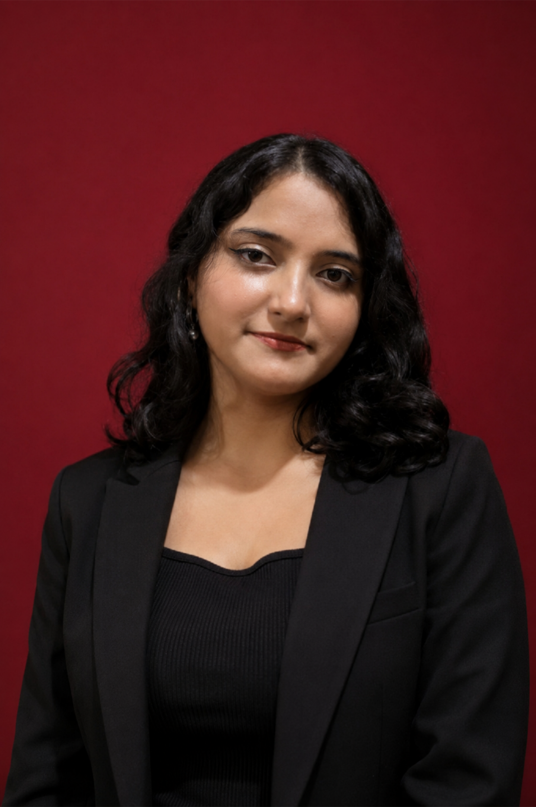
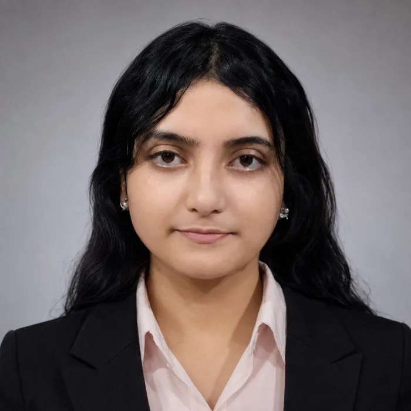

Core Member
Newton School Coding Club, Sister Nivedita University

OPEN TO OPPORTUNITIES
AI engineer. Curious builder. Based in Kolkata.
01 / Selected work
How my work connects
Select a layer to see the projects and technologies connected to it.
02 / Technical toolkit

Eshita Kundu · Kolkata04 / Experience + education
Leadership & community
Newton School Coding Club, Sister Nivedita University
05 / Recognition
06 / Contact
Full-time preferred. Open to strong internship roles.